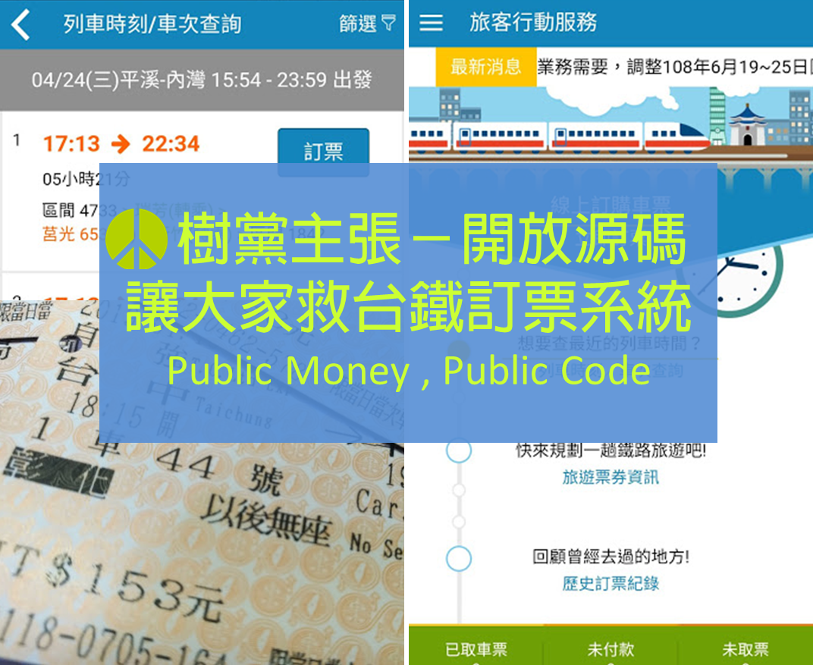

開放源碼，讓大家救台鐵訂票系統
潘翰聲(樹黨國際秘書)、陳家宏(樹黨中評委、外資軟體工程師)
台鐵訂票長年為旅客所詬病，甚至被揶揄一輩子都看不到改革的可能。第四代票務系統花十億元上線，其中的 APP部分花費 1080 萬元，被使用者負評僅2.8顆星，被立委指為弊案，要求公開經費流向。政府標案往往把軟硬體綁在一起，總是將大部分經費用於看得到的硬體，輕忽真正關鍵的軟體。從使用者需求的角度，來開放台鐵訂票系統程式源碼，讓大家一起來救他，改善到真正好用，主責的程式開發者在專業社群的協作和監督下，讓工程品質更加透明，以市場機制讓優良廠商得到獎勵，讓整體技術因正面競爭和互相學習而提升，會比單純公開金流更重要也更有效。

¶群眾智慧共同監督
群眾外包 (crowdsourcing) 在網路時代的企業界很常見，讓使用者深度參與產品的開發過程，這對公共治理的有很大的啟示。以往的民眾參與，經常侷限於人微言輕的單向提供意見，政府政策確定執行後，民眾實際使用的不便，很難即刻調整應變，只能苦等多年之後的結構調整。台鐵歷來改版都是封閉的循環，每次的引頸期盼都令人大失所望，所有不滿都只能痴痴幻想下一次改版會更好。
歐洲自由軟體基金會堆動的「公家用錢．公開源碼 (Public Money Public Code) 」–運用公共經費所採購建立的資訊系統，應以自由開源軟體授權釋出 ，歐盟已在去年通過法案，並在保加利亞等國實施。台鐵一套耗費人民十億納稅錢的系統軟體，只要公開源碼成為自由軟體，讓自身的源碼被無數的肉眼檢查過千百遍，就是運用群眾的智慧來共同解決問題，並自然達到民主的監督防腐。
當軟體的價值與價格是否相符，可以被所有人公開檢視，它必然省錢，政府也不再需要每年進貢數十億元給少數幾家壟斷性的全球軟體財團。這也便於公眾可重複利用與改進，讓專業者得以檢驗並提出改進之道，讓 PDCA 循環式品質管理 (Plan-Do-Check-Act) 可即時回饋民眾的需求，不必再積怨至民意潰堤。當政府其他部門有類似的需求，就不必一再地「重造輪子」，提高客製化的可能性和效率。特別是安全性的資安課題，承包的開發商將不敢心存僥倖而偷懶，也較能遏制黃牛以機器人程式搶票。
因此公開源碼有三個方面的好處：
- 省錢 － 比如，有 libre Office 可用，就可省去貴參參的 Microsoft Office。
- 安全性 － 資安議題。
- 效率 － 不要一再地重造輪子，提高客製化的可能性。
雖然軟體系統最核心的重要程式碼，通常是來自少數的科技菁英，然而當程式碼開源之後，一般的使用者也可能在使用軟體的過程中，抓到小漏失(bug) 並且透過檢視程式碼而提出改進，進而成為開發者之一。正因如此，開源程式碼的問題往往難以逃過專業社群公開的同儕審查。
¶開放源碼後，軟體系統就一定可以修好嗎? 還是砍掉重練?
前面我們提到的這個說法有點像是萬靈丹：「只要開放源碼，大家一起來看，就可以提出修改，把問題改好。」實務上，真實世界當然沒有那麼簡單。在一般情況的軟體開發來講，也有很多時候( 搞不好是十之八九) ，軟體的源碼反正不會有主管看，粗製濫造就交出去，可以跑得動就好，順不順再說。這種案子就算開源了，高手一看，就會說「沒有救了，直接砍掉重練比較省工 」。
如果一套軟體，它在製作的過程中，是有做依賴注入 (dependency injection) 的設計，而且有跑過完整的測試流程，比方說：單元測試 (unit test) 、整合測試 (integration test) ，這樣子的軟體，日後要修改 bug ，或是新增功能 (feature) ，都很容易 ，因為先前的工程已經打得相當紮實。有依照業界標準的開發流程嚴謹測試的程式碼，通常也比較少 bug 。但是如果沒有開源，我們就無法得知 ，這些軟體的工作，到底做得紮不紮實，花錢的人有沒有當冤大頭。不然有些人就會想說反正沒人看，而繼續打混。
如果政府花錢做的軟體(包括台鐵)的程式碼開源之後，發現源碼完全沒有單元測試 (unit test)，或在架構上嚴重設計不良，難以透過重構 (refactoring) 來起死回生，這樣也可以透過公開來督促承包商自我改進。
唯有不掩蓋錯誤，讓錯誤出現，才能修正錯誤。
從另一個角度來說，如果某特定承包商製做軟體時，堅持著工匠精神 (craftsmanship) ，當源碼公開後，來自第三方專業人士很快就能對該承包商給予正面的回饋。在市場機制的作用之下，堅持工匠精神的廠商，得能獲取應得的利潤，整體的軟體業才能進步。資訊的流通對於市場機制能否發揮作用，至關重要。
¶公開源碼是一種社會創新
管理學大師彼得．杜拉克 (Peter Drucker) 認為，影響最大的創新，往往來自於社會的創新，而不是科技的創新。而開源軟體，正是一種社會創新：「當軟體開源的概念廣為人群所接受後，這個概念進而重塑了既有的軟體業獲利模式、既有的軟體生產方式，以及軟體開發人員學習的方式。」
什麼是社會創新，舉幾個例子來說：
- 分期付款。一個社會有了分期付款，經濟模式就會從生產趨動轉化為需求趨動 。分期付款的創新，不在於科技，而是在於改變人們對於『付款』的定義。
- 貨櫃。把卡車的四個輪子從貨櫃上拆掉，直接把貨櫃放上油輪，今日超大量的海運才成為可能，這是全球化運籌帷幄的生產供應鏈的基本條件。貨櫃的創新，重點也不在於科技，而是在於改變既有的認知，將貨運船視為物料處理的工具，而非傳統「船」的認知。
進一步來說，程式碼就是法律。程式碼一旦執行，不僅比警察更徹底，也讓一般人更難以質疑。 哪些網站算是不良網站？哪些內容應該被封鎖？應該讓程式碼說了算數。正因為現代的社會，程式碼已經愈有愈有能力宰制一般人生活，到達了近似於法律的效果。「要求政府機關公開源碼，攤在陽光下」，這是民主社會的基本訴求。
公開源碼既避免科技獨裁，也很大程度防止技術官僚欺瞞決策的政治菁英。未來能否取得標案的關鍵，將是本身的技術層次和過往的成績，而非裙帶關係。
「高手在民間」讓開放源碼的制度創新無可限量，這項主張並不是要找台鐵麻煩或給他難堪，而是要讓所有民間公司或個人一起來協助台鐵改善品質。
其實目前政府各單位，已經有許多用開源的成功案例，如中央氣象局氣象資訊中心 ，就以此實踐自動化的天氣測報與服務作業，促進氣象預報產業的萌芽。公開源碼的改革，將有助於提昇台灣政府公部門的軟體水準與品質，這將會是開放政府、透明政府，這些抽象口號所能帶給人民真正有感的政策。
如果台鐵引以為傲的不再只有附屬的便當販售，當包袱沉重的台鐵都能改革，還有哪個政府部門做不到呢?